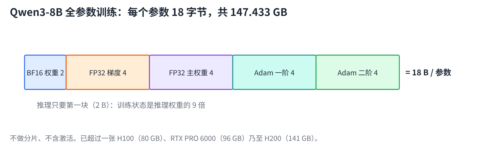
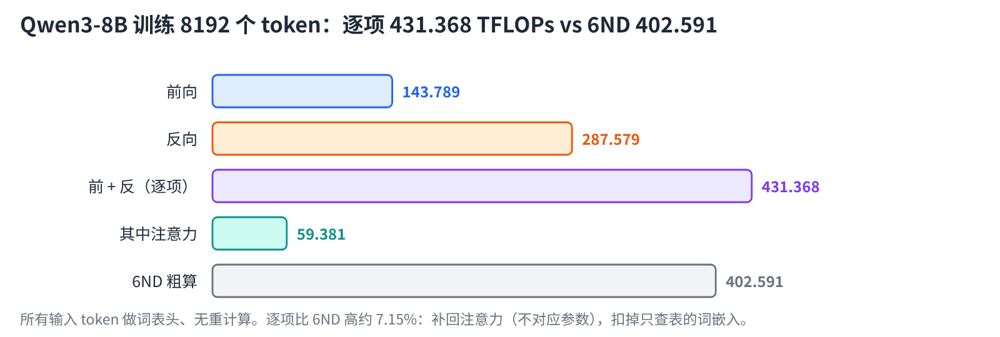
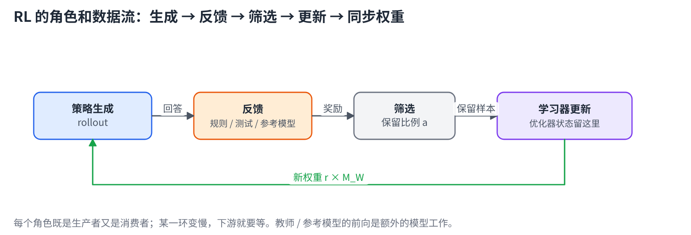
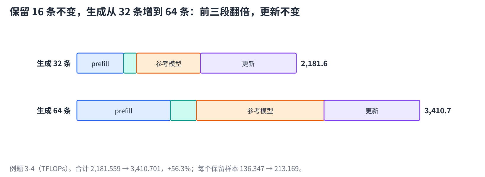
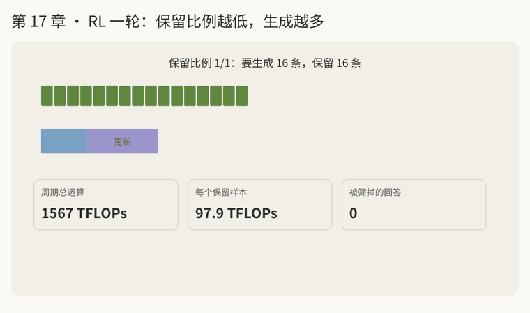

第 17 章 · 训练与强化学习的计算和状态：为什么训练要 6ND、要存 18 字节
本地运行
git clone https://github.com/wikieden/ai-infra-from-constraints
cd ai-infra-from-constraints/code/notebooks
pip install jupyterlab torch numpy
jupyter lab ch17_training_rl.ipynb也可以下载后直接用 VS Code 打开 .ipynb 运行。需要 GPU 的章节在 Colab 里选「代码执行程序 → 更改运行时类型 → GPU」。
本章回答：训练一个线性层，为什么是前向的三倍运算？全参数训练 Qwen3-8B，光参数相关的状态就要多大？"6ND" 粗算漏了什么、多算了什么？RL 一轮里，生成、评分、更新、同步各花多少，样本筛得越严为什么越贵？
讲解日期：2026-11-24 · 上一章：第 16 章 多模态与实时交互 · 下一章：第 18 章 Scaling law 与全生命周期成本
对应原文：materials/ai-infra-book/manuscripts/03-推理与训练负载.md§3.4–§3.5 L380–L548（例题 3-3、3-4，图 3-21 到 3-26）
本章缩写：BF16 = Brain Float 16（Google Brain 提出的 / 浮点 / 16 位）· FP32 = Floating Point 32（浮点 / 32 位）· OPD = On-Policy Distillation（同策略 / 蒸馏）· RL = Reinforcement Learning（强化 / 学习）· SFT = Supervised Fine-Tuning（监督 / 微调）· STEM = Science, Technology, Engineering, Mathematics（科学 / 技术 / 工程 / 数学）。全部缩写见 缩写与术语表
推理用权重算输出；训练还要用输出和目标的差去改权重。改权重要"倒着走一遍"，还要把中间结果和优化器的记忆存下来。
讲解
第一步：反向传播：一个线性层，三次一样大的矩阵乘法（2026-11-24）
类比：做错一道题后复盘。 要知道"这一步该怎么改"（权重梯度），得翻出当时用的草稿（前向的输入 \(X\)）；要把"错在哪"告诉前一步（输入梯度），得用这一步的方法（权重 \(W\)）倒推回去。所以草稿得留着，复盘完才能扔。
公式（原文 L389）：\(Y = XW\)，\(X\) 是 \([m, k]\)，\(W\) 是 \([k, n]\)，后一层传回 \(\partial\mathcal{L}/\partial Y\)：
| 操作 | 两个输入 | 输出 | FLOPs |
|---|---|---|---|
| 前向 \(Y = XW\) | \([m,k]\)、\([k,n]\) | \([m,n]\) | \(2mkn\) |
| 输入梯度 \(\mathrm{d}X = \mathrm{d}Y\,W^{\mathsf T}\) | \([m,n]\)、\([n,k]\) | \([m,k]\) | \(2mkn\) |
| 权重梯度 \(\mathrm{d}W = X^{\mathsf T}\mathrm{d}Y\) | \([k,m]\)、\([m,n]\) | \([k,n]\) | \(2mkn\) |
三次都是 \(mkn\) 个乘加，合计约 \(6mkn\)。所有训练 token 都过同一组参数时，累加起来：
- \(N\)：参数量；\(D\)：训练 token 总数。
- 冻结某个矩阵：省掉它的权重梯度；但前面的层还要梯度，输入梯度照算。
- MoE 只对选中的专家算梯度；注意力按查询—键配对算（第 07 章）。
例子（编的小数）：\(m = 2\)，\(k = 3\)，\(n = 4\)：前向 48、输入梯度 48、权重梯度 48，合计 144 FLOPs。
补基础：反向传播的推导见《PyTorch 从里到外》目录里的 autograd 章节。
一句话：训练的矩阵运算约是前向的三倍：前向一次，反向算输入梯度和权重梯度各一次。
第二步：参数相关的状态：每个参数 18 字节（2026-11-24）
类比：一位记账员除了账本本身，还要留一本"这次该改多少"的草稿（梯度）、一本精确到分的总账（FP32 主权重），以及两本"最近趋势"的笔记（Adam 的两个矩估计）。
例题 3-3（原文 L410–L412）：Qwen3-8B，8,190,735,360 个参数，不做分片：
| 状态 | 每参数字节 | 用来做什么 |
|---|---|---|
| BF16 权重 | 2 | 前向和反向计算 |
| FP32 梯度 | 4 | 算更新量 |
| FP32 主权重（master weight） | 4 | 高精度更新 |
| Adam 一阶矩 | 4 | 梯度的移动平均 |
| Adam 二阶矩 | 4 | 梯度平方的移动平均 |
| 合计 | 18 | 147.433 GB ≈ 137.308 GiB，是推理 BF16 权重的 9 倍 |
还没算激活，就已经超过一张 H100（80 GB）、RTX PRO 6000（96 GB）乃至 H200（141 GB）。

图 17-1 · Qwen3-8B 全参数训练的参数相关状态。激活和工作区按各自的生命周期另算（原书第 10 章讲分片、重计算和卸载）。
生命周期不同（原文 L404）：某层激活从前向算出留到这一层反向用完；梯度在反向产生、更新后可以清；优化器矩估计要跨很多次更新一直保留。
micro-batch 与更新（原文 L438）：每个 micro-batch \(B_\mu\) 条、每条 \(P\) 个 token，累计 \(a\) 个 micro-batch 更新一次：每次更新读 \(aB_\mu P\) 个输入 token；只有 \(P_{\mathrm{label}}\) 个参与监督时，有效 token 是 \(aB_\mu P_{\mathrm{label}}\)。拆成更多 micro-batch 改变执行顺序和激活的生命周期，不改总数据量。
一句话：全参数训练每个参数约存 18 字节（BF16 权重 + FP32 梯度 + FP32 主权重 + Adam 两个矩），是推理权重的 9 倍。
第三步：6ND 粗算漏了什么、多算了什么（2026-11-24）
类比：按人头估餐费，漏了酒水（注意力），又把只来坐了一下的人算成吃了全套（词嵌入只查表）。
长度会改变注意力（原文 L432）：两组文档都是 8192 个 token。
| 分组 | 有效查询—键配对 | Qwen3-8B 一层 \(QK^{\mathsf T}\) 与 \(AV\) 前向 |
|---|---|---|
| 4096 + 4096 | 16,781,312 | 约 0.275 TFLOPs |
| 7168 + 1024 | 26,218,496 | 约 0.430 TFLOPs（+56%） |
投影和 FFN 两组一样（都是 8192 行）；长文档里每个 token 看到的前文更多。
完整算一遍（原文 L444–L458）：Qwen3-8B，\(B = 1\)，\(P = 8192\)，全参数训练，所有输入 token 都做词表头，没有重计算：
| 矩阵计算 | TFLOPs |
|---|---|
| 前向 | 143.789 |
| 反向 | 287.579 |
| 前向 + 反向 | 431.368 |
| 其中因果注意力 \(QK^{\mathsf T}\) 与 \(AV\) 前反向 | 59.381 |
| 总参数代入 \(6ND\) | 402.591 |
两项修正：注意力不对应任何参数，6ND 漏了它（+59.381）；词嵌入有参数但只查表，6ND 多算了它。相抵后逐项结果比 6ND 高约 7.15%。这是第 05 章说的"模型漏项"：要修正的是模型，只有修正后的下界才能用来衡量 MFU。

图 17-2 · 前向、反向和其中的注意力；右边一根是 6ND。
只算有监督的 token（原文 L460）：把有效标签减到 4096，如果仍对全部 token 做词表投影，运算量不变；先挑出要监督的 token 再做词表投影，降到 416.074 TFLOPs。
场景代码：PyTorch 里只对回答部分算损失，且只对这些位置做词表投影（省掉不监督 token 的 lm_head）：
import torch.nn.functional as F
h = model.model(input_ids).last_hidden_state # [B, P, d]：主干照样处理全部 token
mask = labels != -100 # 只有回答部分参与监督
logits = model.lm_head(h[mask]) # 只对这些位置做词表投影：省下的就是这部分
loss = F.cross_entropy(logits.float(), labels[mask]) # 平均到有效 token 上
loss.backward() # 反向：梯度只从这些位置流回
一句话：6ND 漏了注意力、多算了只查表的词嵌入；长度分布、标签和词表头策略都会改变真实训练量。
第四步：RL 一轮：生成、评分、更新、同步（2026-11-24）
类比：学生做题、老师批改、学生总结、再把新方法教给下一轮做题的自己。 做题慢，批改就得等；批改再严，做的题就得更多。
原文 L476–L482：语言模型里，策略是给定上下文时选下一个 token 的概率分布。rollout 是用当前策略生成回答；奖励来自规则、测试或另一个模型；学习器更新参数；新权重再送回生成端。

图 17-3 · 每个角色既是生产者又是消费者；哪个变慢，后面的就要等。
要生成多少（原文 L491）：每轮要保留 \(n_{\mathrm{keep}}\) 条，平均保留比例 \(a\)：
保留 16 条，比例 1/2 要生成 32 条，1/4 要生成 64 条。
组内相对奖励的陷阱（原文 L498）：同一组回答的奖励全一样（比如全对），减去组内平均后每条的优势都是 0，策略梯度也是 0：跑完了整个流程，却没学到东西。
例题 3-4（原文 L508–L531）：Qwen3-8B，8 道题每题 4 份回答，\(P = 1024\)，\(G = 256\)，保留 16 条；参考模型对全部回答各做一次前向。
| 阶段 | 处理样本 | 生成 32 条（TFLOPs） | 生成 64 条（TFLOPs） |
|---|---|---|---|
| rollout prefill | 32 / 64 | 465.143 | 930.286 |
| rollout decode（255 步 / 条） | 32 / 64 | 129.056 | 258.112 |
| 参考模型前向 | 32 / 64 | 634.944 | 1269.888 |
| 策略更新（一次遍历） | 16 | 952.416 | 952.416 |
| 合计 | 保留 16 | 2,181.559 | 3,410.701（+56.3%） |
每个保留样本分摊从 136.347 涨到 213.169 TFLOPs；多出的 1,229.142 TFLOPs 全部来自额外回答的生成和参考模型计算。

图 17-4 · 保留比例下降，前两个阶段按回答总数涨，更新阶段只看保留样本。
同步权重（原文 L541）：\(r\) 个生成副本各收一份完整权重，传输量 \(rM_W\)：Qwen3-8B 四个副本约 \(4 \times 16.381 = 65.526\) GB。优化器状态留在学习器，生成端只要权重。
一句话：RL 一轮的成本 = 生成数 ×（生成 + 评分）+ 固定的更新；样本筛得越严，前两项越贵，更新不变。
动画演示：RL 一轮：保留比例越低，生成越多

可交互版：animations/17-training-rl.html（滑块：样本保留比例，1/8 到 1；固定保留 16 条、例题 3-4 的每条成本）。
怎么看：
- 一排方块是生成的回答，绿色是保留下来进更新的，灰色是被筛掉的（第四步）；
- 下面四段堆叠条：prefill、decode、参考模型、更新；前三段随回答数变长，更新那段不变；
- 播放时保留比例 1 → 1/2 → 1/4 → 1/8：周期总量从约 1,567 涨到约 5,869 TFLOPs；
- 右边显示"每个保留样本分摊多少"。
练习与作答记录
题 1（第一步）：一个线性层 \(m = 512\)，\(k = 1024\)，\(n = 4096\)。前向、输入梯度、权重梯度各多少 FLOPs？如果这层被冻结、但更前面的层还在训练，反向要算哪一项？
作答记录：（待作答）
题 2（第二步）：一个 30 亿参数的模型全参数训练，每参数 18 字节，参数相关状态多大（GB）？如果把 FP32 梯度改成 BF16，又去掉单独的 FP32 主权重，每参数还剩几字节？
作答记录：（待作答）
题 3（第四步）：沿用例题 3-4 的每条成本（\(f_g + f_r\) 和 \(F_u\) 从两行数据反推），保留 16 条、保留比例 0.3 时（期望生成数可以不是整数）周期总量是多少？每个保留样本分摊多少？
作答记录：（待作答）
原书练习 3-6（L468–L470：每参数 18 字节改 BF16 梯度，micro-batch 2 × 4096、标签 1024、累计 8 次）、练习 3-7（L545–L547：生成 48 条、教师前向、四个副本的同步量）。想多练可以做。
口诀
复盘要草稿，倒推用方法：前向一次，反向两次；
账本 2 字节，草稿总账两本笔记各 4 字节；
人头估餐费，漏了酒水多算了旁观；
题筛得越严，做得越多，总结不变。
本章复习卡片
I60（反向传播的三次矩阵乘法与 6ND）、I61（每参数 18 字节）、I62（6ND 的两项修正）、I63（RL 周期 \(F_{\mathrm{cycle}}(n)\) 与保留比例）。练习做完后，按答错、卡住的地方再补。
附录 · 延伸阅读
留给以后深入学习用，不影响本章主线。★ 是建议先读的。
推荐阅读
| 读什么 | 读哪里 | 读它为了什么 |
|---|---|---|
| ★ AII 第 3 章 | §3.4–§3.5 L380–L548 | 本章原文，例题 3-3、3-4 |
| Rajbhandari 等, ZeRO（2020） | 第 3 节 | 每参数 16 / 18 字节的来历，以及怎么分片（原书第 10 章） |
| DeepSeek-R1 技术报告 | GRPO 与可验证奖励 | RL 训练路线（原文 [^r1]） |
verl 文档（原文 [^verl]、[^verl-loss]） |
优势计算、损失聚合 | 组内相对优势为零、token 平均的分母 |
| 《从零学强化学习》 | 策略梯度、PPO 章节 | 策略、优势、策略梯度的基础 |
| AII 第 10 章 | §10.1–§10.5 | 训练系统里怎么放这些状态、怎么排 RL 各阶段 |
数学原理
- 矩阵求导：\(Y = XW\) 时 \(\partial\mathcal{L}/\partial W = X^{\mathsf T}(\partial\mathcal{L}/\partial Y)\)，形状和 \(W\) 一样；\(\partial\mathcal{L}/\partial X = (\partial\mathcal{L}/\partial Y)W^{\mathsf T}\)，形状和 \(X\) 一样。
- 期望生成数：每条以概率 \(a\) 被保留，要保留 \(n\) 条，期望生成 \(n/a\) 条。
- 优势为零：\(A_i = r_i - \bar r\)，所有 \(r_i\) 相等时 \(A_i = 0\)。
公式清单
| 公式 | 意思 |
|---|---|
| \(\mathrm{d}X = \mathrm{d}Y\,W^{\mathsf T}\)，\(\mathrm{d}W = X^{\mathsf T}\mathrm{d}Y\) | 线性层的两个梯度 |
| \(F_{\mathrm{train}} \approx 6ND\) | 训练运算粗算 |
| 每参数 \(2 + 4 + 4 + 4 + 4 = 18\) 字节 | 全参数训练的长期状态 |
| 每次更新输入 token \(= aB_\mu P\)，有效 \(= aB_\mu P_{\mathrm{label}}\) | micro-batch 累计 |
| \(n_{\mathrm{generate}} \approx n_{\mathrm{keep}}/a\) | RL 生成数 |
| \(F_{\mathrm{cycle}}(n) = n(f_g + f_r) + F_u\) | RL 一轮 |
| 同步量 \(= rM_W\) | 权重分发 |
代码对照：把本章的数字用代码算一遍
纯 Python，不需要 GPU。代码在仓库本地
ai-infra/solutions/chapter-code/ch17_training_rl.py，配套测试tests/test_ch17.py：
bash cd ai-infra/solutions/chapter-code uv run python ch17_training_rl.py # 一步一步打印 uv run pytest tests/test_ch17.py
讲义 ↔ 代码：
| 讲义 | 公式 | 写法 | 跑出来 |
|---|---|---|---|
| 第一步 三次矩阵乘法 | \(2mkn\) × 3 | linear_train_flops(2, 3, 4) |
48、48、48 |
| 第二步 18 字节 | 逐项相加 | train_state_gb(8_190_735_360) |
147.433 GB = 137.308 GiB |
| 第三步 长度与配对 | 三角形数 | doc_pairs([4096, 4096])、doc_pairs([7168, 1024]) |
16,781,312 和 26,218,496 |
| 第三步 6ND 修正 | 比值 | 431.368 / 402.591 |
高约 7.15% |
| 第四步 RL 周期 | \(n(f_g + f_r) + F_u\) | rl_cycle(n) |
32 条 2,181.559，64 条 3,410.701 |
| 第四步 同步 | \(rM_W\) | sync_gb(4) |
65.526 GB |
关键几行：
F_PER_RESP = (465.143 + 129.056 + 634.944) / 32 # 一条回答的生成 + 参考模型
F_UPDATE = 952.416 # 16 条保留样本的一次更新
def rl_cycle(n_generate):
return n_generate * F_PER_RESP + F_UPDATE # 生成数只影响前一项
代码里才看得到的 3 件事：
rl_cycle(64)算出 3,410.702，和原文 3,410.701 只差 0.001（各阶段只给到三位小数）：说明例题里各阶段确实严格按回答数线性增长（等长样本、不提前停止、不共享前缀）。doc_pairs对每篇文档单独算三角形：拼成一条 8192 的长序列又不加文档边界掩码的话，配对会变成 33,558,528，比两篇独立文档多一倍。- 18 字节里没有激活；激活随序列长度和层数变，原书第 10 章另算。
自己改一改（不影响练习答案）：
- 用
doc_pairs比较 8 × 1024 和 1 × 8192 两种切法的注意力配对。 - 把
train_state_gb的每参数字节改成 16（梯度 BF16），看能省多少。 - 画出
rl_cycle(n) / 16随 \(n\) 的变化：每个保留样本的成本怎么随保留比例下降而上升。